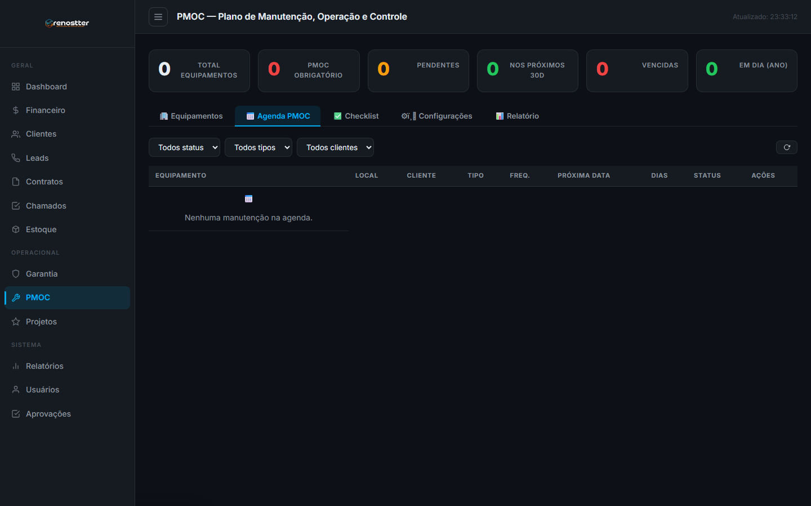
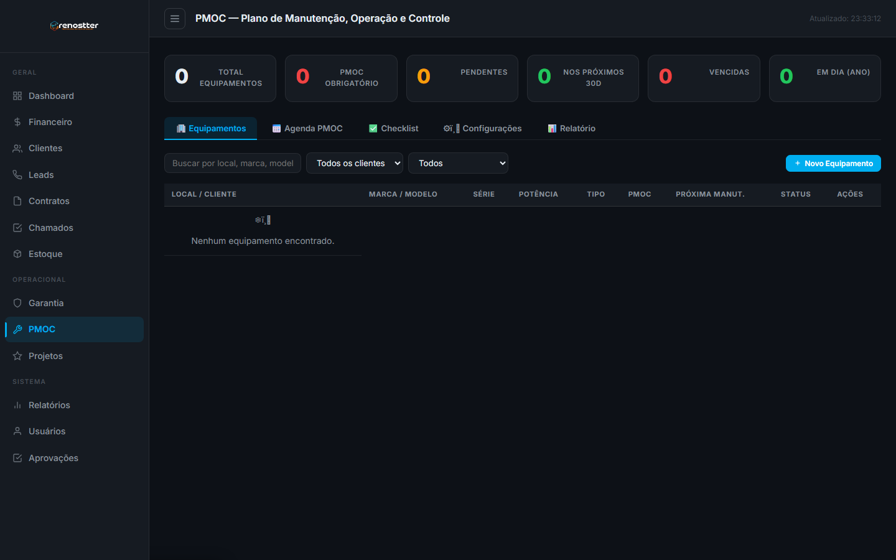
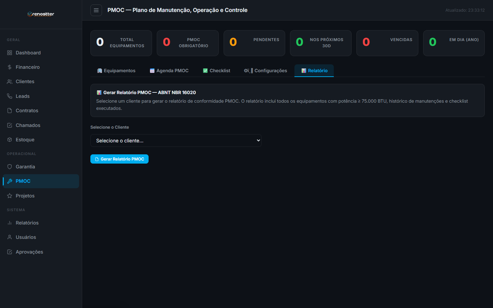

1Visão geral
O módulo de PMOC (Plano de Manutenção, Operação e Controle) é o coração da conformidade legal da Renostter. Segundo a ABNT NBR 16020 e a Portaria GM/MS 3.523/1998, todo sistema de ar-condicionado com capacidade ≥ 60.000 BTU (ou 5TR) deve ter um PMOC ativo, com manutenções preventivas periódicas registradas e auditáveis.
Por que existe
Antes deste módulo, o controle era em planilhas: técnico ia ao local, marcava no Excel, e ninguém auditava. Risco de:
- Esquecer de manutenção → falha do equipamento → cliente insatisfeito
- Multa da vigilância sanitária (R$ 2.000 a R$ 1,5M em casos graves)
- Perda de contrato PMOC com o cliente (R$ 300-2.000/mês)
O módulo resolve com: agenda automática por periodicidade, checklists por tipo de manutenção, alertas de vencimento, e relatório ABNT pronto pra apresentar à fiscalização.
Quem usa
- Técnico de campo — executa manutenções, marca checklist, anexa fotos
- Engenheiro / RT — assina ART, gera relatório para o cliente, planeja agenda
- Gerente de operações — acompanha conformidade, aloca técnicos
- Auditor / Fiscalizador — recebe o relatório PDF/HTML em formato padrão NBR 16020
2O que é PMOC (na prática)
Um PMOC não é só "trocar filtro". É um plano documentado que cobre:
| Etapa | O que é | Frequência |
|---|---|---|
| Limpeza | Filtros, serpentinas, turbinas, dreno | Mensal ou trimestral |
| Verificação elétrica | Tensão, corrente, isolação, aterramento | Trimestral |
| Verificação mecânica | Vibração, ruído, pressão de gás, temperatura | Trimestral |
| Medição de qualidade do ar | Partículas, umidade, temperatura, CO₂ | Semestral |
| Análise microbiológica | Coleta e análise em laboratório (legionella) | Anual |
| Verificação de segurança | Extintores, rotas de fuga, sinalização | Semestral |
| Documentação | Registro em livro ou sistema, ART do RT | Por execução |
A Portaria GM/MS 3.523/1998 e a ABNT NBR 16020:2012 determinam que todo sistema de climatização com capacidade ≥ 60.000 BTU deve manter um PMOC ativo e auditável. A Resolução RE 09/2003 da ANVISA define os parâmetros de qualidade do ar interior. Multas: R$ 2.000 a R$ 1.500.000 (Lei 6.437/1977).
3Acesso rápido
Para abrir o módulo:
- Sidebar → menu Operacional → PMOC
- URL direta:
http://localhost:3000/crm/admin/pmoc.html - PWA técnico (
tecnico/index.html) — mostra agenda do dia para o técnico logado
4As 4 abas do módulo
O módulo PMOC é organizado em 4 abas. Cada uma tem uma responsabilidade clara:
| Aba | O que faz | Quando usar |
|---|---|---|
| 📅 Agenda PMOC | Lista de manutenções agendadas, vencidas, executadas | Todo dia — ver o que precisa ser feito |
| 📋 Checklist | Editor de itens verificados em cada tipo (Trimestral, Semestral, Anual) | Configuração inicial + quando muda norma |
| 🔧 Equipamentos | Cadastro dos equipamentos HVAC monitorados | Quando cliente novo ou troca equipamento |
| 📊 Relatório NBR 16020 | Geração de relatório consolidado para fiscalização | Quando cliente pede ou fiscalização visita |
4.1 Agenda PMOC
A agenda é o coração operacional. Mostra todas as manutenções (passadas, hoje, futuras) com filtros por status.

Status de uma manutenção
| Status | Quando | Ação |
|---|---|---|
| Pendente | Agendada mas ainda não executada | Executar (clica na linha) ou reagendar |
| Concluída | Foi executada, checklist marcado | (nenhuma, ver histórico) |
| Vencida | Data passou e não foi executada | Executar urgente ou justificar |
| Reagendada | Data original foi movida | Ver novo prazo |
Como executar uma manutenção
- Na agenda, clique na linha da manutenção Pendente
- O modal abre com: dados do cliente, equipamento, checklist específico do tipo (Trimestral/Semestral/Anual)
- Marque cada item do checklist (✓ Conforme, ✗ Não conforme, — N/A)
- Adicione observações por item (ex: "Filtro sujo, trocado")
- Anexe fotos (opcional mas recomendado)
- Adicione observações gerais (ex: "Pressão de gás OK, 12 psi")
- Clique 💾 Salvar Manutenção
O checklist fica auditável se tiver foto do filtro limpo, do display de temperatura, do gás no manômetro. Anexe sempre que possível — facilita na fiscalização.
4.2 Checklist (itens por tipo)
O checklist define o que é verificado em cada manutenção. Vem pré-populado com itens padrão da NBR 16020, mas pode ser customizado por cliente.
Tipos de manutenção padrão
| Tipo | Frequência | Itens típicos |
|---|---|---|
| Mensal | 1x/mês | Filtros, dreno, temperatura |
| Trimestral | 4x/ano | Limpeza serpentinas, verificação elétrica, pressão de gás |
| Semestral | 2x/ano | Medição de qualidade do ar, análise microbiológica simples |
| Anual | 1x/ano | Análise microbiológica completa, calibração de sensores, ART |
4.3 Equipamentos
Cadastro de todo equipamento HVAC que precisa de manutenção preventiva. Cada equipamento tem:
- Dados técnicos: marca, modelo, série, BTU, tipo (split, VRF, chiller, self-contained)
- Localização: cliente, endereço, sala/andar, coordenadas GPS
- PMOC obrigatório:
simse ≥ 60.000 BTU (exigência legal) - Periodicidade: mensal, trimestral, semestral, anual (ou custom)
- Próxima manutenção: data calculada automaticamente a partir da última execução

Como cadastrar equipamento
- Na aba Equipamentos, clique + Novo Equipamento
- Selecione o cliente (o sistema puxa endereço)
- Preencha dados técnicos: marca, modelo, número de série, BTU/h, tipo
- Marque PMOC Obrigatório se ≥ 60.000 BTU
- Defina a periodicidade (trimestral é o padrão mais comum)
- Salve — o sistema agenda a primeira manutenção
4.4 Relatório NBR 16020
Gera o relatório de conformidade no formato exigido pela norma. Use quando:
- Cliente pede comprovação de conformidade
- Fiscalização sanitária visita o local
- Auditoria interna / externa
- Renovação de contrato PMOC

O que o relatório inclui
- Identificação do cliente (Razão Social, CNPJ, endereço)
- Lista de todos os equipamentos monitorados (com BTU e tipo)
- Histórico de manutenções executadas no período (data, tipo, técnico, checklist)
- Conformidade por item (percentual de ✓)
- ART do Responsável Técnico (número, data, assinatura digital)
- Indicadores de qualidade do ar (se medidos)
5Periodicidades
Conforme a ABNT NBR 16020 e o Regulamento Técnico GM/MS 3.523/1998:
| Capacidade | Frequência mínima | Observações |
|---|---|---|
| ≥ 5 TR (60k BTU) | Trimestral | PMOC obrigatório por lei |
| 2–5 TR (24-60k BTU) | Semestral | Boa prática, exigido em algumas prefeituras |
| < 2 TR (24k BTU) | Anual | Manutenção preventiva recomendada |
Quando uma manutenção é concluída, o sistema agenda a próxima baseada na periodicidade do equipamento (ex: trimestral → +3 meses). Se você agendar manualmente, sobrescreve o cálculo automático.
6Workflow típico
Ciclo de uma manutenção preventiva PMOC:
- Setup inicial — cadastra cliente, equipamentos e periodicidades
- Sistema agenda — primeira manutenção é criada automaticamente
- Notificação — D-3 dias, técnico recebe alerta no PWA ou e-mail
- Execução — técnico vai ao local, segue checklist, marca itens, anexa fotos
- Conclusão — sistema salva manutenção, agenda próxima
- Conformidade — KPI atualizado em tempo real no BI
- Relatório — ao final do período, gera relatório NBR 16020 para o cliente
7Boas práticas
✅ Faça
- Marque TODOS os itens do checklist — itens em branco não contam como conformes
- Anexe fotos do antes/depois — vira evidência em caso de fiscalização
- Use observações técnicas — anote pressões, temperaturas, medições (auditável depois)
- Configure alertas de vencimento (D-7 e D-1) para não perder prazo
- Revise a lista de equipamentos quando cliente troca aparelho (remove antigo, cadastra novo)
- Treine os técnicos no checklist — uniformidade é chave para auditoria
❌ Evite
- Não marque item sem verificar — pode invalidar ART
- Não pule manutenções — sistema detecta e bloqueia geração de relatório
- Não altere data retroativa sem justificativa — fica marcado como "atrasado"
- Não esqueça da ART — sem RT registrado, relatório NBR 16020 é inválido
8API reference (resumo)
Endpoints REST do PMOC:
GET /api/pmoc/equipamentos
Lista todos os equipamentos com filtros opcionais (pmoc_obrigatorio, cliente_id, search).
POST /api/pmoc/equipamentos
Cadastra novo equipamento.
POST /api/pmoc/equipamentos
{
"cliente_id": "<uuid>",
"marca": "Carrier",
"modelo": "X-Power 60k",
"serie": "XP-2024-001",
"potencia_btu": 60000,
"tipo": "split_piso_teto",
"pmoc_obrigatorio": true,
"periodicidade": "trimestral",
"localizacao": "Sala TI - 2º andar"
}GET /api/pmoc/agenda?status=pendente
Lista manutenções agendadas. Filtros: status (pendente, concluida, vencida), tecnico_id, periodo (proximos_7_dias, este_mes).
POST /api/pmoc/manutencoes
Registra uma manutenção executada.
POST /api/pmoc/manutencoes
{
"equipamento_id": "<uuid>",
"tipo": "trimestral",
"data_execucao": "2026-07-21",
"tecnico_id": "<uuid>",
"checklist": [
{"item": "Filtro de ar limpo", "status": "conforme", "obs": "Filtro trocado"},
{"item": "Pressão de gás", "status": "conforme", "obs": "12 psi"}
],
"fotos": ["https://...", "https://..."],
"observacoes_gerais": "Manutenção executada sem intercorrências"
}GET /api/pmoc/relatorio?cliente_id=<uuid>&periodo=2026-01-01_2026-12-31
Gera o relatório consolidado no formato NBR 16020. Retorna HTML pronto para impressão ou PDF.
GET /api/pmoc/conformidade
KPIs agregados (taxa de conformidade, manutenções no prazo, vencidas). Alimenta o BI Dashboard.